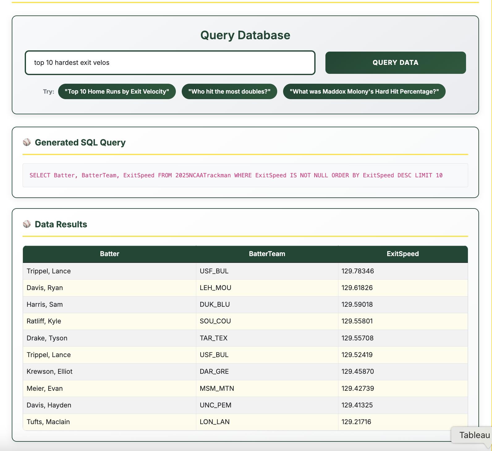

Model
Using the Vanna AI framework, I set up and trained a large language model by providing it with a series of question–SQL query pairs. This training process was designed to help the model learn the specific structure and schema of our database, so that it could better understand how natural language questions map to the underlying tables, columns, and relationships. This project is still in the developmental stages.
